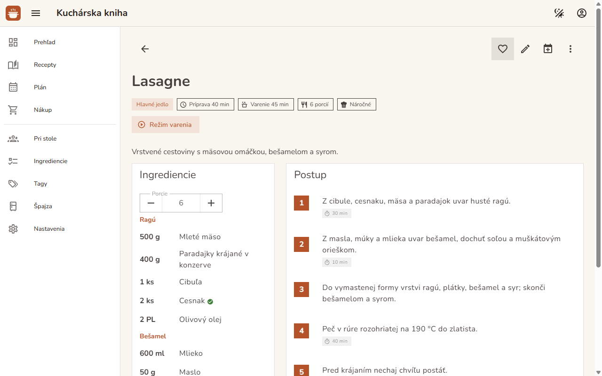

Recepty a import
Kuchárka, ktorá si pamätá aj babkine recepty
Recepty s porciami, časom, štítkami a skupinami surovín (korpus, náplň, poleva). Hľadanie podľa názvu alebo suroviny, aj bez diakritiky. Recept z internetu pridáš jedným klikom, cez záložku v prehliadači alebo rozšírenie do Chromu.
- Mriežka aj tabuľka, filtre s počtami, hromadné úpravy
- Režim varenia s časovačmi a obrazovkou, ktorá nezhasne
